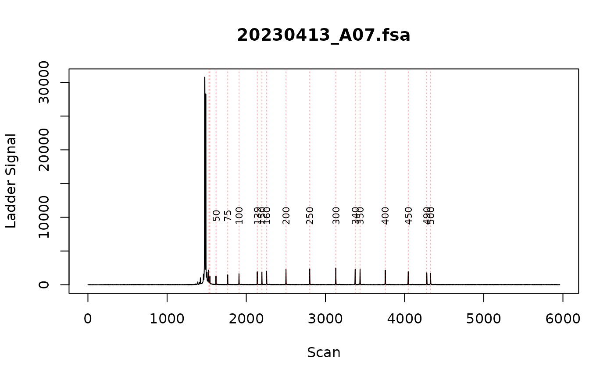

Ladder and bp sizing
find_ladders.RdFind the ladder peaks in and use that to call bp size
Arguments
- fragments_list
list from 'read_fsa' function
- config
A trace_config object generated using
load_config().- ...
additional parameters from any of the functions in the pipeline detailed below may be passed to this function. This overwrites values in the
config. These parameters include:ladder_channel: string, which channel in the fsa file contains the ladder signal. Default:"DATA.105".signal_channel: string, which channel in the fsa file contains the data signal. Default:"DATA.1".ladder_sizes: numeric vector, bp sizes of ladder used in fragment analysis. Default:c(50, 75, 100, 139, 150, 160, 200, 250, 300, 340, 350, 400, 450, 490, 500).ladder_start_scan: single numeric indicating the scan number to start looking for ladder peaks (only required when ladder signal does not have large spike at start). Usually this can be automatically found (when set to NA) through the detection of the large spike at the start of the signal. Default:NA.minimum_ladder_signal: single numeric for minimum signal of peak from smoothed signal. Default:NA.ladder_assign_left_to_right: single logical for if the ladder should be assigned from the smallest base pair size to largest (TRUE), or if the order should be reversed and assigned from largest to smallest (FALSE), which can be helpful since the end often has cleaner signal than the start. Default:TRUE.ladder_selection_window: single numeric for the ladder assigning algorithm. We iterate through the scans in blocks and test their linear fit (We can assume that the ladder is linear over a short distance). This value defines how large that block of peaks should be. Larger values should be better because the fit is tested in greater context, but larger numbers will make the fit increasingly slower. Default:5.ladder_top_n_branching: single numeric. The ladder assigning algorithm branches as it tests the various combinations. This value defines how many branches should be created. If the correct combination is not found, you could try increasing this value, but it will make it increasingly slower. Default:5.ladder_branching_r_squared_threshold: single numeric. The branches of the ladder assigning algorithm are pruned by R-squared values above this threshold to discard fits that are not promising. If the correct combination is not found, you could try decreasing this value, but it will make it increasingly slower. Default:0.99.min_scan: single numeric indicating the lower scan limit to filter out scans below. Default:NA.max_scan: single numeric indicating the upper scan limit to filter out scans above Default:NA.max_combinations: single numeric indicating what is the maximum number of ladder combinations that should be tested. Default:2500000.warning_rsq_threshold: single numeric for the value for which this function will warn you when parts of the ladder have R-squared values below the specified threshold. Default:0.998.show_progress_bar: single logical for showing progress bar. Default:TRUE.
Value
This function modifies list of fragments objects in place with the ladder assigned and base pair calculated.
Details
This function takes a list of fragments files (the output from read_fsa) and identifies the ladders in the ladder channel which is used to call the bp size. The output is a list of fragments.
In this package, base pair (bp) sizes are assigned using a generalized additive model (GAM) with cubic regression splines. The model is fit to known ladder fragment sizes and their corresponding scan positions, capturing the relationship between scan number and bp size. Once trained, the model predicts bp sizes for all scans by interpolating between the known ladder points. This approach provides a flexible and accurate assignment of bp sizes, accommodating the slightly non-linear relationship.
Use plot_data_channels() to plot the raw data on the fsa file to identify which channel the ladder and data are in.
Each ladder should be manually inspected to make sure that is has been correctly assigned.
See also
plot_data_channels() to plot the raw data in all channels. plot_ladders() to plot the assigned ladder
peaks onto the raw ladder signal. fix_ladders_interactive() to fix ladders with
incorrectly assigned peaks.
Examples
fsa_list <- lapply(cell_line_fsa_list[1], function(x) x$clone())
config <- load_config()
trace:::find_ladders(fsa_list, config, show_progress_bar = FALSE)
# Manually inspect the ladders
plot_ladders(fsa_list[1])
